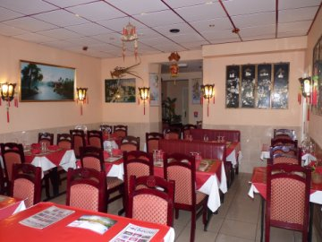

Le Mékong vous propose de goûter aux délices des cuisines cambodgiennes, chinoises et thaïlandaises dans un décor typiquement cambodgien. Vous pourrez y déguster amok, nouilles d'Angkor, bœuf Lok Lah, fondues maison et bien d'autres plats qui vous feront voyager aux confins de l'Asie…
Le Mékong vous accueille au 180 bis rue de Fougères à Rennes tous les jours de 11h45 à 14h00 et de 19h00 à 22h30. Pour réserver ou pour de plus amples informations, n'hésitez pas à nous contacter. À bientôt !